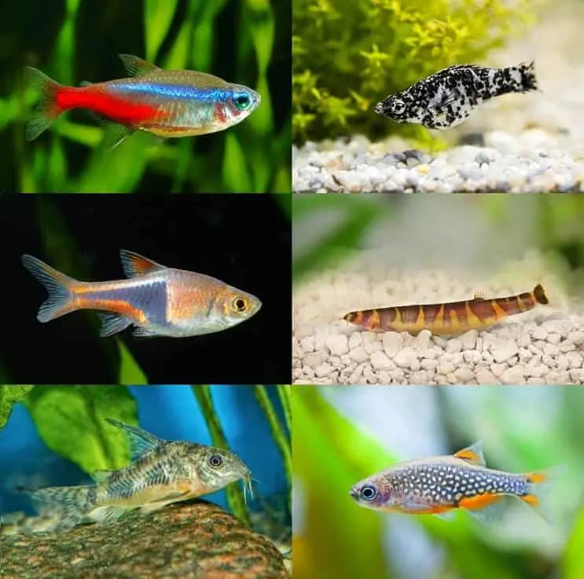

Betta tank mates

While betta fish can be aggresive little munchkins, that doesn't mean they can't have friends! Below is a list of some
of the most popular betta safe tank mates. Enjoy!
African dwarf frogs
Neon tetras
Kuhli loaches
ember tetras
Mystery snails
Otocinclus catfish
Harlequin rasboras
Cory catfish
Female guppies
Platys
Rummy-nosed tetras